第19天：懒惰代码移动
第19天：懒惰代码移动
首先，我们要了解一下什么是完全冗余和部分冗余。
如果在所有到达 p 的路径上，表达式 a + b 已经被求过值，并且在最后一次求值之后，变量 a 和 b 没有被重新定值，我们就说表达式 a + b 在点 p 的计算是完全冗余的。
请看下面的代码：
1 | |
公共子表达式消除（Common Subexpression Elimination，简称 CSE）可能将上面的代码优化为：
1 | |
这样优化后，原来需要计算“a + b”三遍，现在只需要计算一遍。
如果在某些（但不是全部）到达 p 的路径上，表达式 a + b 已被计算过且有效，我们就说表达式 a + b 在点 p 的计算是部分冗余的。
请看下面的代码：
1 | |
懒惰代码移动算法（Lazy Code Motion, 下文简称 LCM）是一种在编译器优化中用于部分冗余消除（Partial Redundancy Elimination, PRE）的高级技术。
如果把代码片段 3 用流图表示，就是下图的图 1
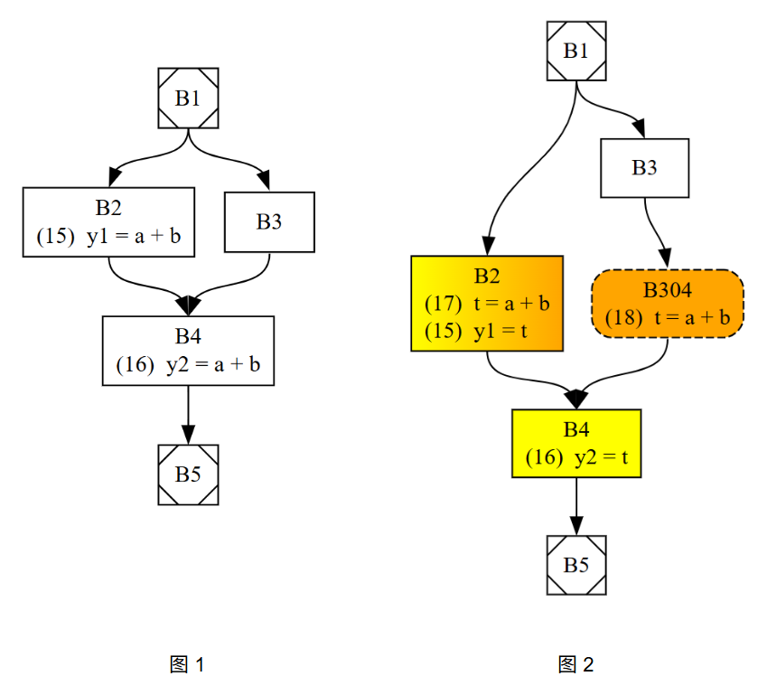
经过 LCM 算法的优化，会变成图 2；
B304 叫做合成块，是为了优化专门插入的，后文会讲。
我们发现，如果是路径 B1-B2-B4，之前需要 2 次计算，优化后仅需要 1 次。
有读者说，如果把对 a + b 的计算前提到 B1 中，就像图 3 这样，是不是也可以呢？
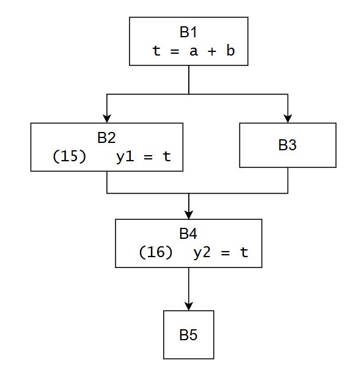
↑图3
当然可以。不过 LCM 的目标是让表达式的计算时刻尽量靠后（所以叫做“懒惰”）。为什么呢？
我们看 B1-B3-B4 这条路径。
图 3 在 B1 就计算了 a + b 的结果是 t， 变量 t 在使用前会一直留在寄存器中，如果计算 t 太早但是使用 t 太晚(可以想象 B3 中干了很多事情)，那么这个寄存器就要一直保留，不能用于其他计算，这是资源的浪费，毕竟处理器中的寄存器十分有限。
如果是 LCM 算法，如图 2，选择在 B３到 B4 的边上插入 t = a + b;
这样做的目的是尽量缩短从 t 被定值时刻到它被使用时刻的时间间隔，相当于减少寄存器的占用时间。
所以，把 a + b 的计算放到 B1中，会增加 t 对寄存器的使用时间。
懒惰代码移动遵循如下原则：仅在必要时移动代码，且尽量将计算向下移动，靠近使用点，而不是盲目上提到最早的可能位置。
步骤简介
此算法十分烧脑，因为要处理四种数据流分析，如下表。
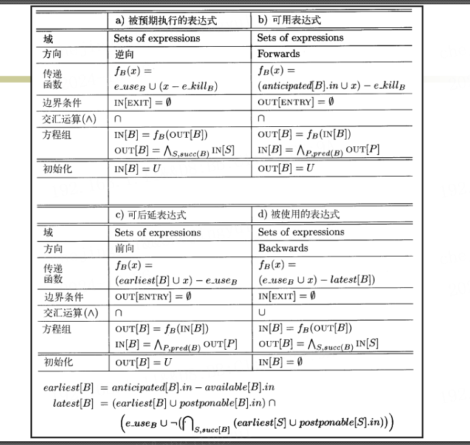
这四种数据流分析要严格按照 a, b, c, d 的顺序来。
分析完后做如下操作：
(1) 在 $latest[B] ∩ used[B].out$
插入 $t = b+c$
(2) 在 $e_use(B) ∩(\lnot latest[B] ∪ used[B].out)$
替换为 $… = t$
估计读者头都大了，这些都是啥？别着急，我们一步一步来。
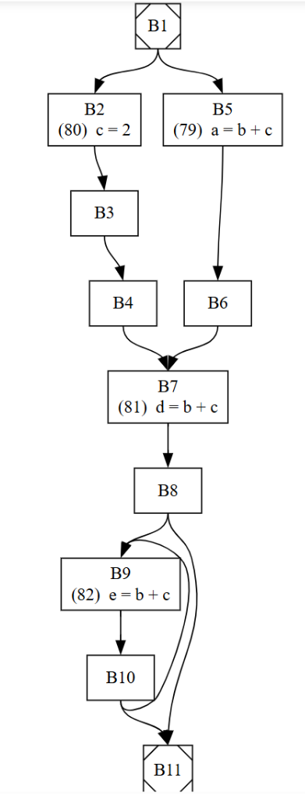
上图就是我们要优化的流图。可以看到，“b + c” 这个计算属于部分冗余。如何优化呢？
示意图说明
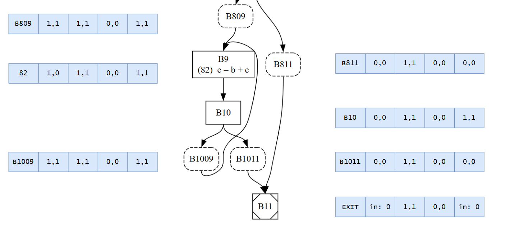
数据流分析在前面已经讲过很多了，相信读者已经掌握了方法。前文以表格的形式给出了四种数据流分析的关键，这里不再赘述。我们直接看每种数据流到达不动点后的结果。
图中的表格：
1 | |
每个格子里面有一对值，表示此指令或者此基本块（如果块里面没有写指令）的 “in, out” 值。
第零关：预处理
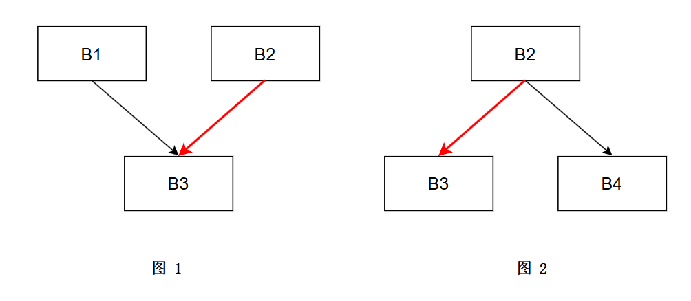
假设这样一种场景：根据优化结果，我们需要在 B2 到 B3 的边上增加一条指令。
在边上增加指令？似乎有些难办。
对于图 1，我们可以在基本块 B2 末尾增加一条指令。
对于图 2，我们可以在基本块 B3 开头增加一条指令。
别高兴太早，如果是下图呢？
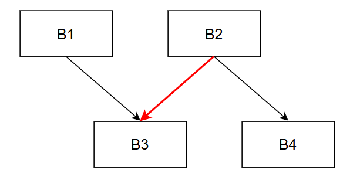
↑图 3
模仿上面的做法，在基本块 B2 末尾增加一条指令可以吗？
不可以！因为 B2 也是 B4 的前驱，如果在基本块 B2 末尾增加一条指令，相当于在 B2 到 B4 的边上也增加了这条指令。
在基本块 B3 开头增加一条指令可以吗？
不可以！同理，会影响 B1 到 B3，相当于在 B1 到 B3 的边上也增加了这条指令。
在编译原理中，图 3 的红色边叫做关键边（Critical Edge）
关键边是指从一个具有多个后继的基本块（例如 B2）到另一个具有多个前驱的基本块（例如 B3）的边。
如何解决呢？
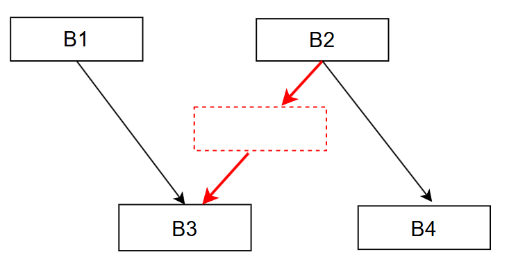
我们可以在 B2 到 B3 的边上插入一个空的基本块（红色虚线），也叫做合成块（synthetics）。把要增加的指令加入到这个基本块中。如此，就不会影响到其他路径。
龙书上的 LCM，为了简化算法，规定只在块的入口放置指令。
考虑到这个限制，我们再思考一遍刚才假设：根据优化结果，我们需要在 B2 到 B3 的边上增加一条指令。
如果是图 2，在 B3 入口插入这个指令，没有问题。
如果是图1，就不能简单地在 B3 入口插入这个指令了，而是需要在 B2 到 B3 的边上增加一个合成块。
所以可以得出结论：根据优化结果，假设需要在某条边上增加一条指令，并且规定只在块的入口放置指令。为了正确性，我们要关注具有多个（两个或以上）前驱的基本块，在它的每个前驱指向它的边上插入合成块。
如下图所示：
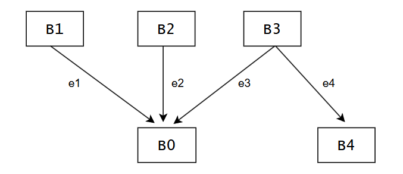
因为 B0 有多个前驱（B1，B2，B3），所以需要在边 e1, e2, e3 上插入合成块。
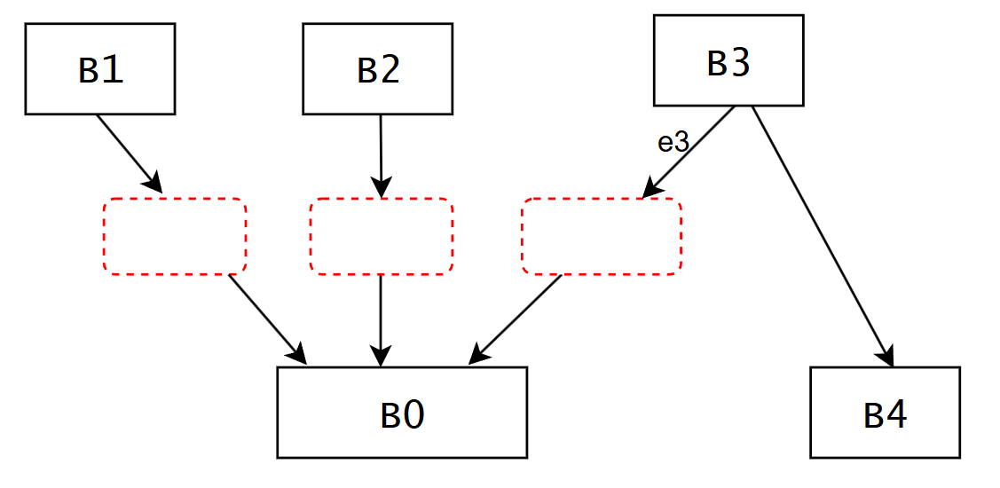
此操作也包含前文中对关键边（e3）的处理。这是因为增加了“只在块的入口放置指令”这个条件后，对流图的拓扑结构要求更加苛刻，从“在关键边（e3）插入合成块”升级为“在边 e1, e2, e3 上插入合成块”。
回到我们要优化的流图，观察发现 B7，B9，B11 这几个基本块都是有多个前驱的，所以先在它们和所有的前驱之间插入合成块。
特别注意，B9 的前驱是 B8 和 B10；
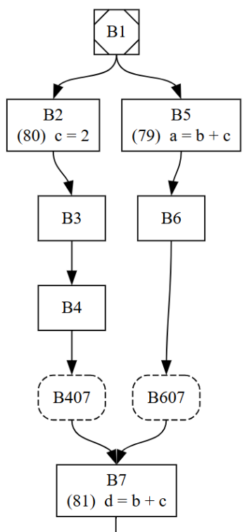
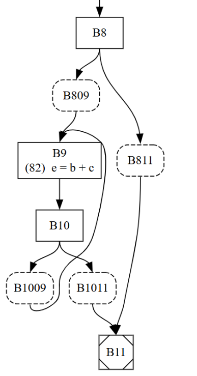
图中虚线框的就是合成块。为了叙述方便，我也为合成块指定了编号。
多说一句，B3、B4、B6 等基本块里面没有写指令，仅有一个编号。
有两个原因会导致这种情况：一是此基本块里的指令和要分析的表达式无关，为了突出重点，就不写了。
二是此基本块里面确实没有指令。有人说怎么可能，没有指令是怎么构成基本块的？我们的代码不是做了优化吗？活跃变量分析的时候，就把一些指令标记为死指令了。考虑极端情况，如果一个基本块里面的指令都被标记为死指令，就相当于这个块里面没有指令。
另外，合成块里面也没有指令，根据优化的结果，可能给里面添加指令。
第一关：被预期执行的表达式
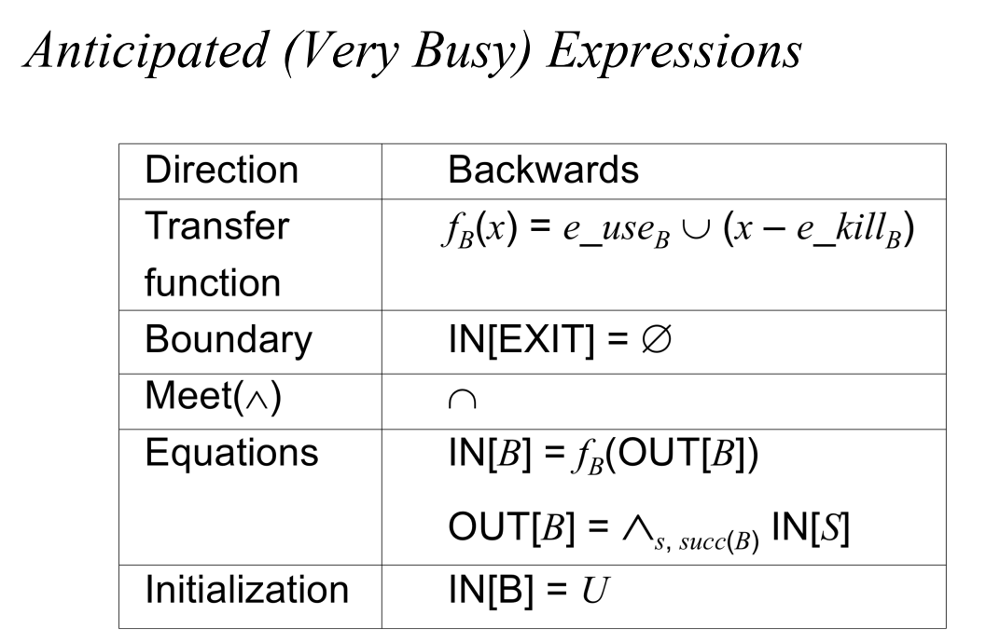
先了解一下什么是“被预期执行”。
龙书 P412，如果从程序 P 点出发的所有路径最终都会计算表达式 b + c 的值，并且 b 和 c 在那时的值就是它们在点 p 上的值，那么我们说一个表达式 b + c 在程序点 p 上被预期执行。
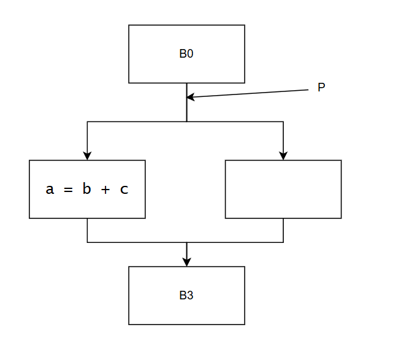
请问上图中表达式 b + c 在 p 点是否预期执行？
答案是否。因为定义说“所有”路径，左边的路径确实预期执行 b + c ，但是右边的路径不会遇到 b + c。
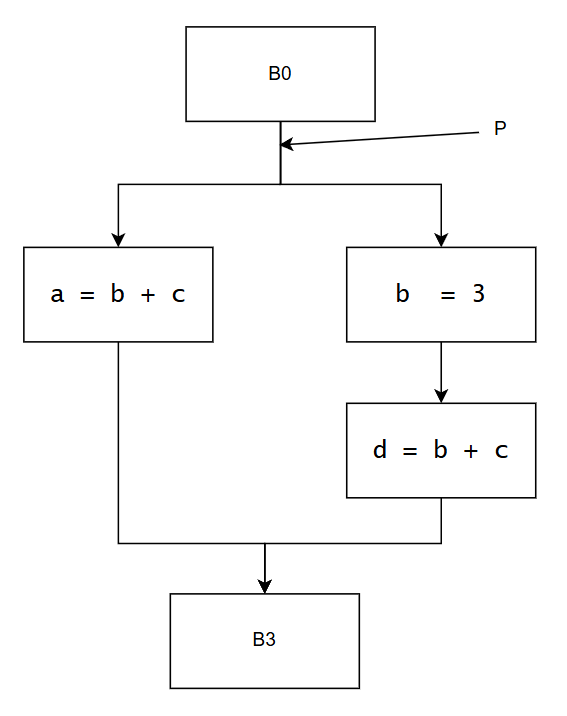
把流图改一下，请问在 p 点表达式 b + c 是否预期执行？
答案是否。虽然所有路径都能遇到 b + c，但是请注意，右边先遇到 b = 3，这导致在表达式 d = b + c 中计算出的 “b + c”的值，并不一定是在 p 点计算出的“b + c”的值。我们说 b = 3 这条语句杀死了表达式 b + c;
换句话说，如果在 p 点 b + c 预期执行，那么你在 p 点计算 b + c 不是白忙活，这个计算结果在未来一定能用上，可以用于 p 点之后每条路径上首先遇到的那个 b + c；
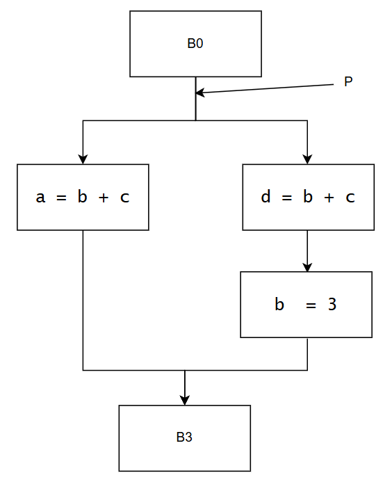
请看上图，请问在 p 点表达式 b + c 是否预期执行？
答案是肯定的。
明白了上述原理，再看数据流分析的公式就好理解了。因为是预期执行，看的是未来，所以是逆向；因为是每条路径，所以交汇运算是交集。
传递函数： f(x) = e_use(B) | (x - e_kill(B))
e_use(B) 的意思是指令中使用的表达式，例如 b + c;
e_kill(B) 的意思是指令中杀死的表达式，比如 b = 3 杀死了表达式 b + c;
需要注意的是，对于表达式 j = j + 1;
e_use(B) = j + 1；
e_kill(B) = j + 1；
因为定义说 “b 和 c 在那时的值就是它们在点 p 上的值”，所以一旦遇到某个指令杀死了表达式，就需要从集合中排除掉这个表达式。这就是公式末尾有个减去 e_kill(B) 的原因。
对于每个指令，在初始化的时候要设置指令的 e_use(B) 和 e_kill(B) 集合；对于合成块或者空的基本块，e_use(B) 和 e_kill(B) 集合都是空集。
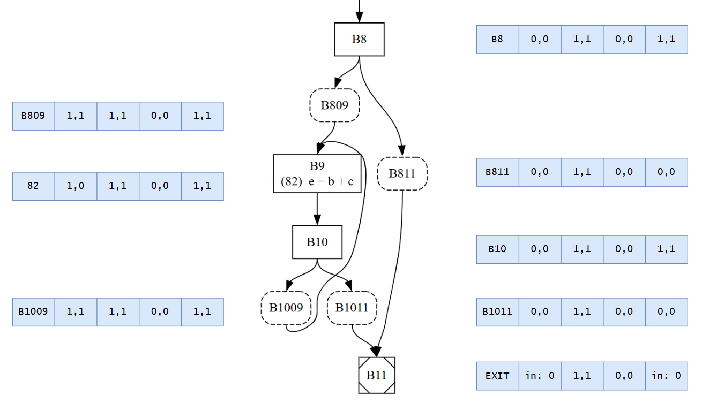
因为是逆向，所以从出口（B11）的 in 开始分析。我们关注表格中第二列的结果。
注意到 B8 的 in 是 0，说明表达式 “b + c” 在 B8 的入口没有被预期执行。理由很简单，B8 - B811- B11 这条路径上没有遇到 “b + c”；
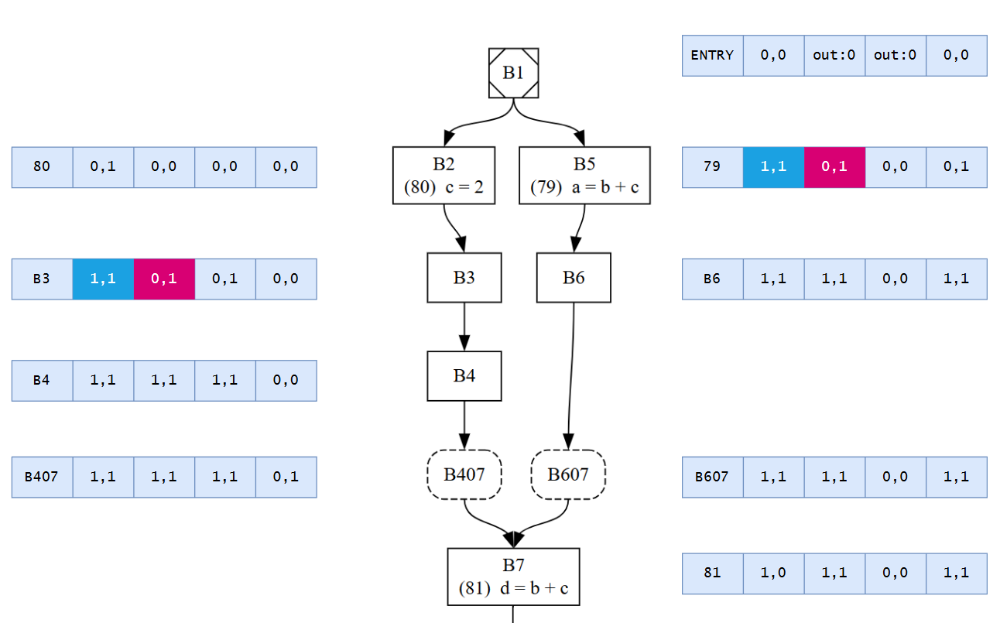
再向上面看，经过了 B7 后， in 变成 1 了。
然后往上分成 2 条路径，左边在 B3 的入口还是 1，但是经过指令 80， 在 B2 的入口，值变成 0；
右边在 B5 的入口还是 1，在 B1 的出口变成 0（因为交汇运算是求交集）
请思考，“b + c”最早被预期执行的地方是哪里？
说白了就是计算“b + c”不白计算，而且越早计算越好。
蓝色的格子，都是“b + c”最早被预期执行的地方。
规律就是观察指令或基本块的 in 值，从 B1（入口）块开始，沿着执行路径观察，in 的值是在哪里从 0 变成 1 的，在 in 刚变成 1 的地方，就是我们要找的地方。
需要注意的是，“最早被预期执行”的“最早”，有点误导人，让我们误以为从入口到出口的某条路径上最多有一个最早被预期执行的地方。其实不然，请看下图：
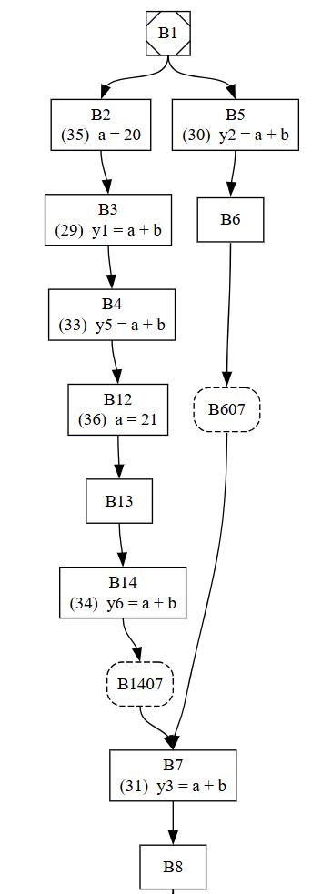
指令29，指令 30 和 B13 的入口，都是“b + c”最早被预期执行的地方。
完善一下刚才的结论：从入口块开始，沿着执行路径观察，in 的值是在哪里从 0 变成 1 的，此指令或者基本块的入口就是我们要找的地方；如果后面又遇到了从 0 到 1 的跳变，那么这个地方也是最早被预期执行的地方。
为什么我们关注最早预期执行的地方？
请看下图。
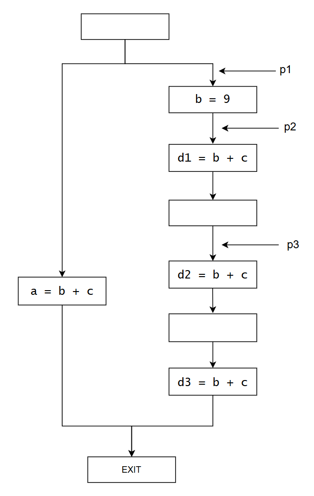
如果在 p3 点计算 t = b + c, 那么 d2 和 d3 就不用再计算 b + c 了(替换为 d2 = t; d3 = t;)相当于减少了一次计算。
如果在 p2 点计算 b + c, 那么 d1、d2 和 d3 就不用再计算 b + c 了，相当于减少了两次计算。
但是不能在 p1 点计算,在 p1 点， b + c 没有被预期执行。
所以，为了消除更多的冗余，我们应该找到最早预期执行的地方。
第二关：可用表达式
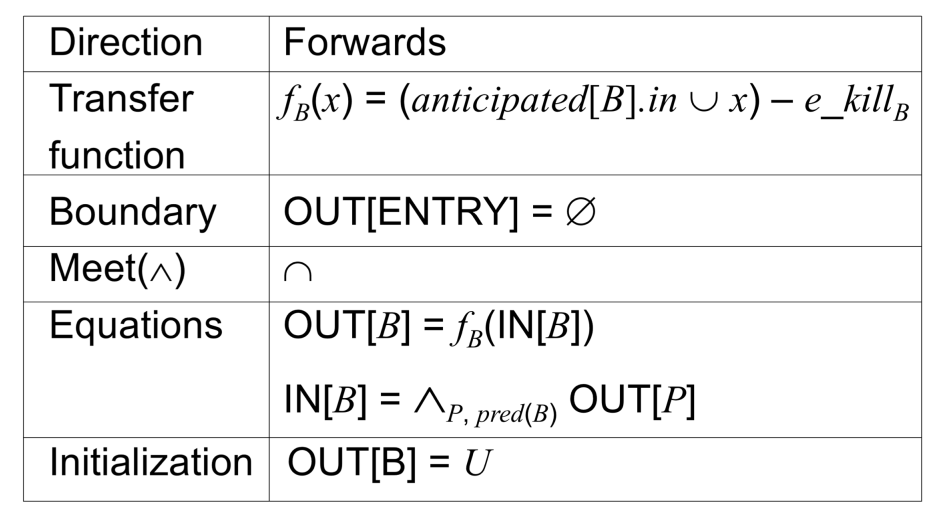
什么是可用表达式？
龙书 P391 给的定义是：如果从流图入口点到达程序点 p 的每条路径都对表达式 x + y 求值，且从最后一个这样的求值之后到 p 点的路径上没有再次对 x 或 y 赋值，那么 x + y 在点 p 上可用（available）。
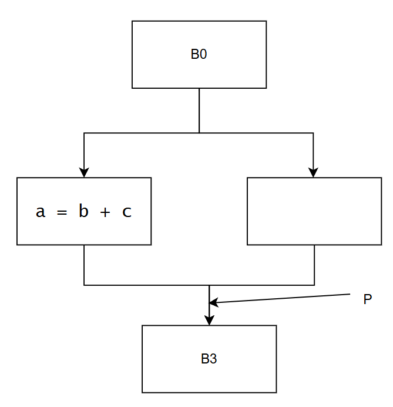
请问上图中 b + c 在 p 点可用吗？
答案是不可用，因为定义说“每条路径”，左边求值了，但是右边没有求值。
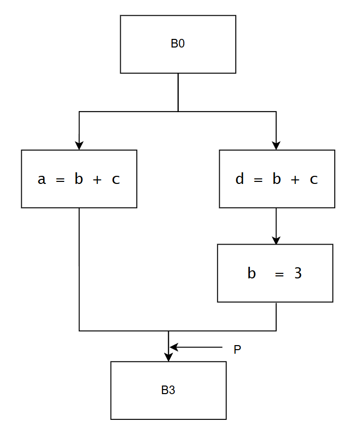
请问上图中 b + c 是否在 p 点可用？
答案是不可用，因为右边先有 b + c，然后遇到了 b = 3;杀死了 b + c；
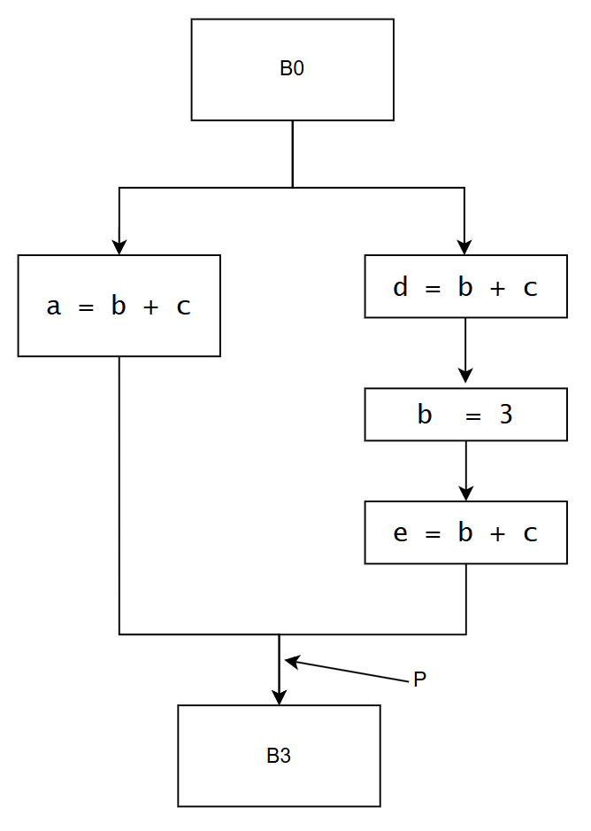
请问 b + c 是否在 p 点可用？
可用。
第一，从流图入口（B0）到达程序点 p 的每条路径都对表达式 b + c 求值;
第二，右边的路径，虽然出现了 b = 3，但是从第二次求值(e = b + c)到 p 点的路径上没有杀死 b + c;
总结一下，“可用”相当于“已计算且未失效”。
不过，LCM 的可用表达式和上面的 available 还是有区别的，LCM 的是 “will be available”。
什么意思呢？想象在所有 anticipated.in = 1 的基本块入口都插入表达式 t = b + c;然后做一个可用表达式数据流分析。
传递函数是 f(x) = (anticipated(B).in | x) - e_kill(B)
龙书（P415）对这个公式的解释是：
一个表达式在一个基本块的出口处可用的条件有 2 个：
1、下列条件之一成立
（1）在入口处可用
（2）在基本块的入口处所预期执行的表达式集合中（如果选择在这里计算它，则它就成为可用的了）
2、没有被这个基本块杀死
我认为如果（2）成立，那么第 2 条是必然成立的，因为如果表达式被杀死了，在入口处就不可能预期执行。如果读者不理解为什么要分析可用表达式，我们举个例子来说明。
如果读者不理解为什么要分析可用表达式，我们举个例子来说明。
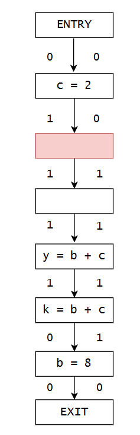
在上面这个流图中，左边是预期执行分析的结果，右边是可用表达式分析的结果。
不难看出，粉色的基本块是最早预期执行的位置。
如何找到“最早预期执行”的地方呢？规律就是 anticipated.in = 1 且 available.in = 0;
LCM 中给出最早可以放置表达式的公式是
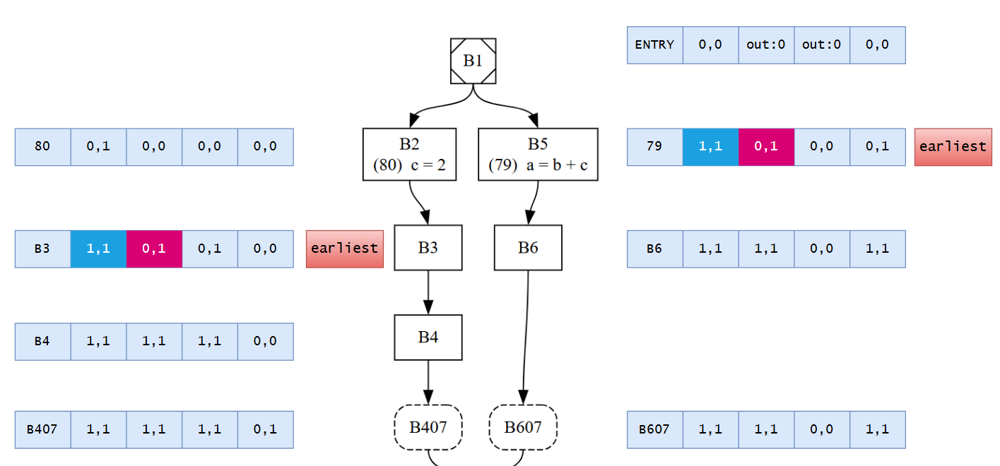
回到我们要分析的流图，我已经把 earliest 标注出来了，是 B3 和 B5；
第三关：可后延表达式
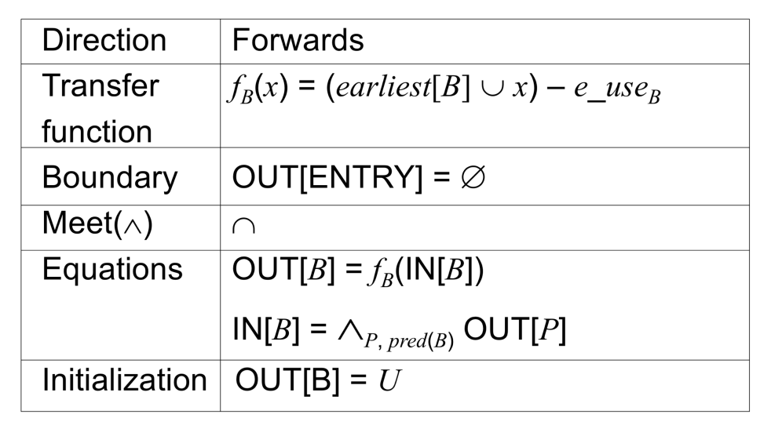
前文说过，为了减少寄存器的占用时间，应该把表达式的计算尽量推后。
LCM 给出的公式为：
这是容易理解的，因为最晚不能晚于这个表达式被使用。
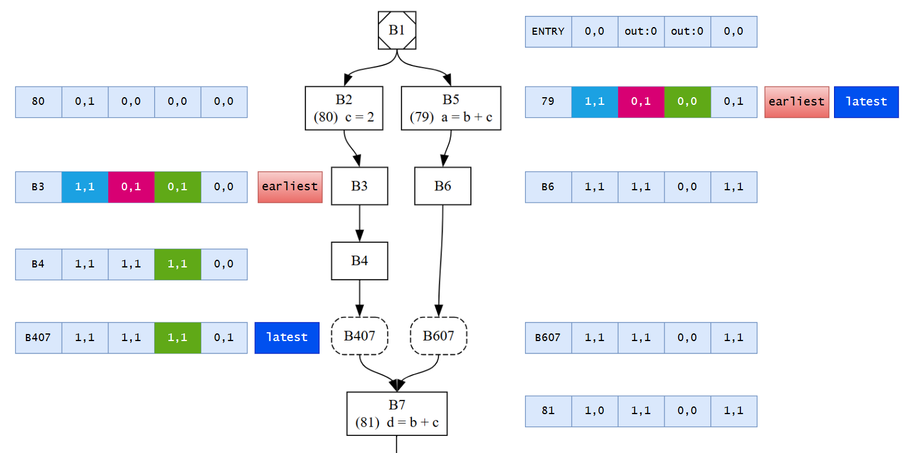
先看左边，第四列，B3 中绿色的格子，因为 B3 是 earliest 且它没有使用 b + c，所以 postponable.out 是 1
经过 B4，再经过 B407，postponable.out 一直是 1；
再看右边，指令 79 虽然是 earliest，但是它使用了 b + c，所以 postponable.out 是 0，这个 0 向下传递，传递到 B607 的 postponable.out;
因为交汇运算是求交集，所以 B7 的 postponable.in 是 0。
所以，从左边看，可以推迟到 B4，还能再推迟到 B407；
从右边看，没有办法推迟。
如果一个块的 postponable[B].in = 1，我们就说可以推迟到这个块或者说这个块在可后延的集合中。
有读者会疑惑为什么左边不能推迟到 B7，这是因为如果这样做，当代码执行右边分支的时候，B7 会引入冗余计算，因为 B5 已经计算过了。
左右分支分别代表了两种情况：
1、右边的 B5，表达式被使用了，所以失去了后延的机会
2、左边 B407 的 postponable.out = 1，但是 B607 的 postponable.out = 0，因为交汇运算是求交集，所以 B7 postponable.in 是 0，导致不能后延到 B7；
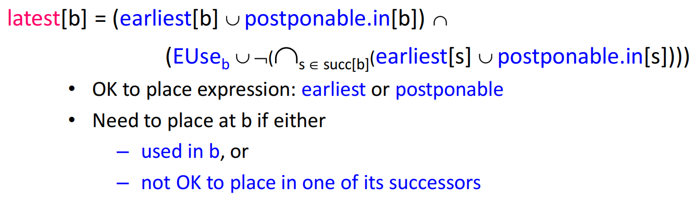
上面就是最后位置（latest）的计算公式。
首先，block 要在 earliest 或可后延集合中（公式的第一行，我把这成为“基本条件”），例如上图中的 B3,B4,B407,B5
其次，还要满足下面 2 个条件之一。
(1) block 使用了表达式（公式第二行的 EUse_b）
(2) b 存在一个后继，不在 earliest 和可后延集合中(公式中对 b 的后继求交集再取反)
如果它的所有后继都满足条件，求交集得 1，再取反得 0，那它就不满足条件。如果它的后继至少有一个不满足条件，求交集是 0，再取反得 1，那它就满足条件。
B5 和 B407 都是 latest，但是前者属于情况（1），后者属于情况（2）
第四关：被使用的表达式
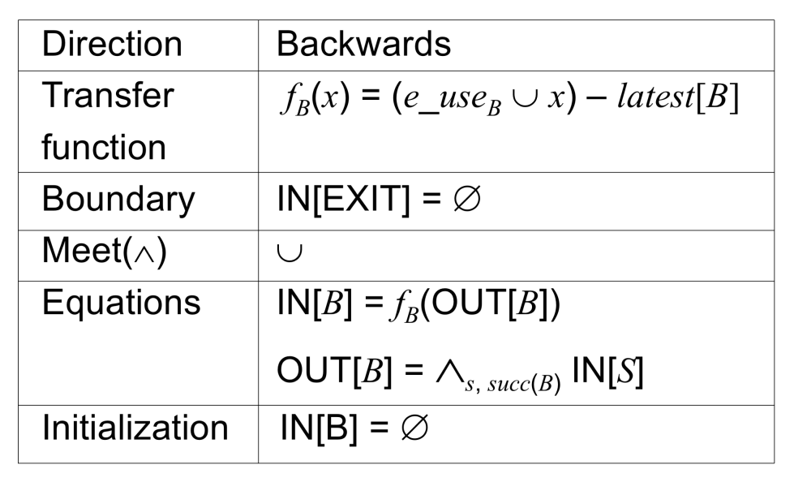
依然是这张图片：
因为 B7 中使用了 b+c，所以 B407 和指令79 的 used.out 都是 1（表格第五列）
第五关：插入与替换
当四种数据流分析完毕，就可以做插入和替换了。
(1) 在 $latest[B] ∩ used[B].out$
插入 $t = b+c$
(2) 在 $e_use(B) ∩(\lnot latest[B] ∪ used[B].out)$
替换为 $… = t$
有人会疑问，插入公式（1）里面为什么有 used[B].out？公式（2）中后面一大串是什么？
请看下面的图：
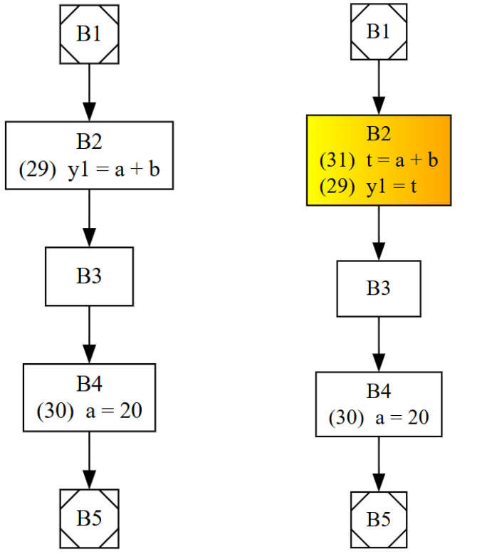
如果改成
(1)在 $latest[B]$ 插入 $t = b+c$
(2)把 $e_use(B)$ 替换为 $… = t$
对于左边的图，通过 LCM 计算，B2 确实是 latest，所以就会优化为右边的样子。
相信读者都看出来了，这不是多此一举吗？因为 a+b 这个表达式在 B2 后面就没有使用过。
所以，类似于活跃变量分析，还要来一轮“被使用的表达式”分析。
方向是逆向；传递函数是：
f(in) = （e_use(B) | out) - latest(B)
为什么是和 latest(B) 求差集呢？
请看下面的图：
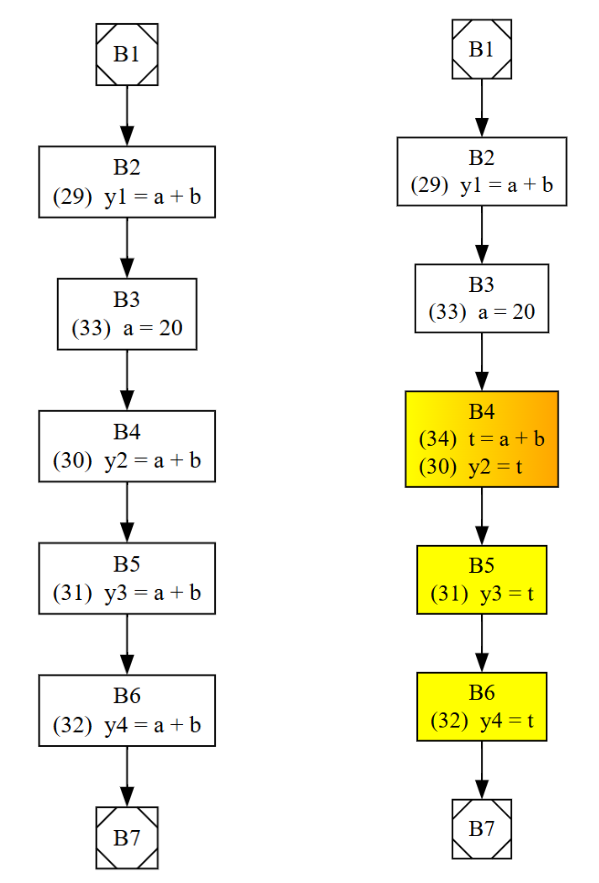
先看左边的图，B2 和 B4 都是 latest;
但是，B4 的 used.out = 1；B2 的 used.out = 0；所以仅对 B4—B5—B6 这条路径做了优化，结果如右图。
因为指令 33 的存在，B4 里面 a + b 的值并不是 B2 里面 a + b 的值，所以 B2 之后，B4 之前，是否使用了 a + b，需要把 B4.in 设置为 0 ，相当于重新分析，所以要和 latest(B) 求差集。
另外，替换公式为
在 $e_use(B) ∩(\lnot latest[B] ∪ used[B].out)$
替换为 $… = t$
前面的 e_use(B) 好理解，毕竟使用了表达式才可以替换，可是后面一大串是什么意思呢？
前面也说了，尽管 B 是 Latest， 但是 used[B].out = 0，这种情况不用插入 $t = b+c$
这种情况只有一种，就是类似上图的 B2，同理 ，它也不需要替换，所以要排除它。
它的特点是 latest[B] ∩ ~used[B].out
对它取反就是 $(\lnot latest[B] ∪ used[B].out)$
最后和 $e_use(B)$ 求交集，就得到了上面的公式。
补充一下，B407 这种 Latest 的 used[B].out 肯定为1，因为它的入口对表达式预期执行（这比被使用的条件更严格）。
最后的优化结果如下图：
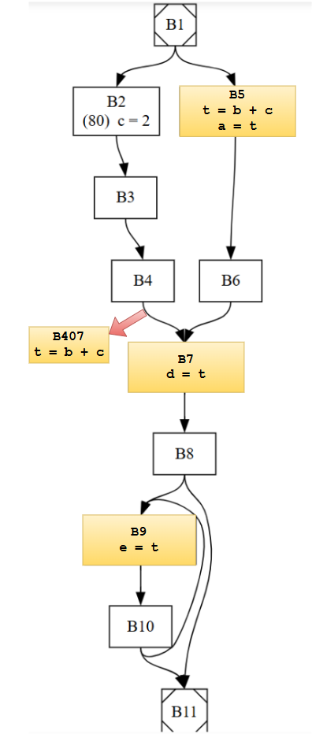
对于没有用到的合成块，可以删除，也就是恢复成原来的边。
合成块 B407 用上了，但是因为 B4 只有它一个后继，把 t = b + c 放到 B4 的末尾也是可以的。
总结
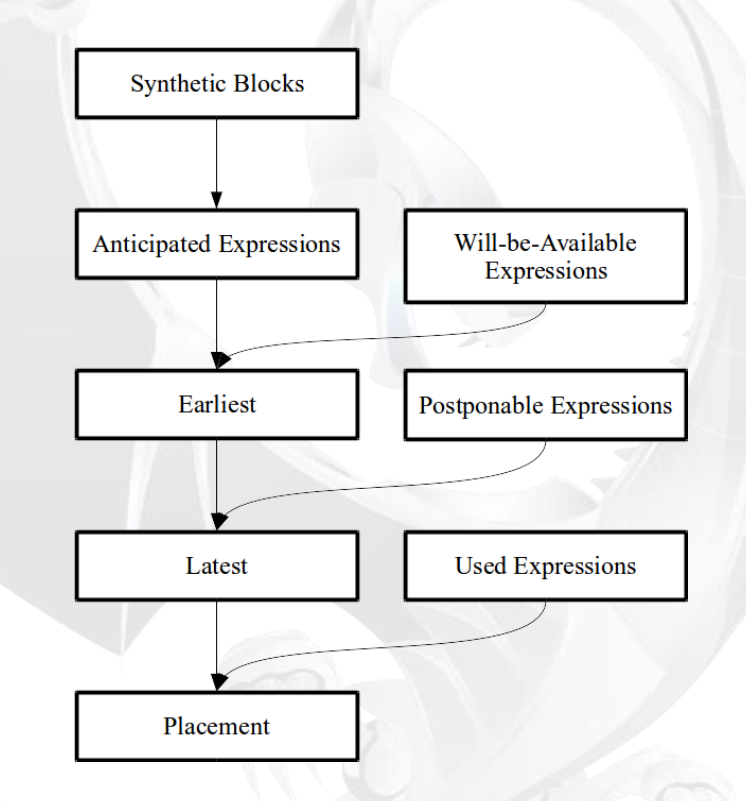
1、插入合成块，这一步很重要，因为有时候需要在边上增加指令；
2、被预期执行的表达式分析，防止引入不必要的计算；
3、将要可用的表达式分析，为了结合 2 找到 earliest
4、可后延表达式分析，为了找到 latest
5、可用表达式分析，清理无用代码
6、插入和替换
本文的内容到这里就结束了，至此我们完成了中间代码优化的学习。
下一次，我们学习新的模块，把中间代码翻译成 x86 汇编。敬请期待…